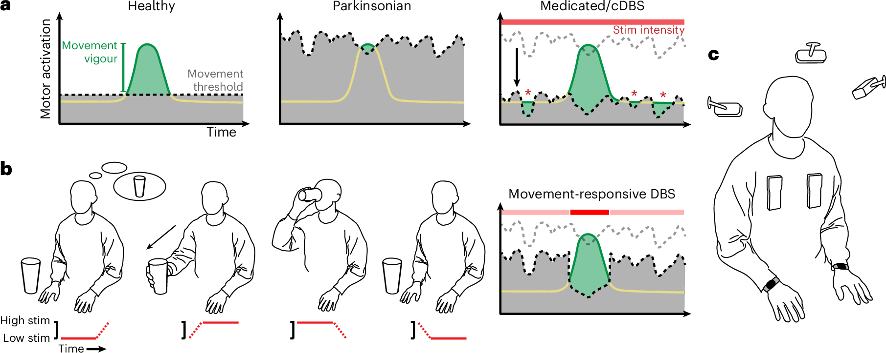
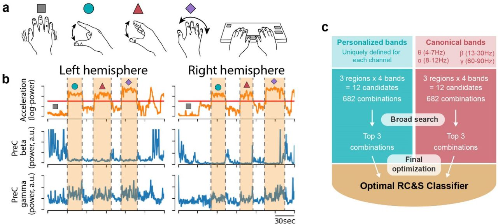
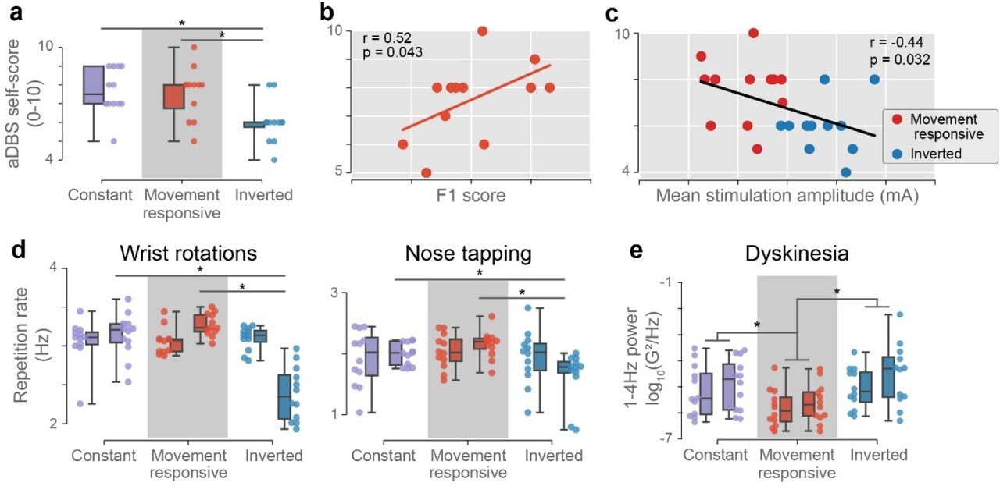

Movement-responsive deep brain stimulation for Parkinson’s disease using a remotely optimized neural decoder
{kind=link}

The published legend, verbatim
Fig. 1: Movement-responsive DBS theoretical framework. a, Motivation for the movement-responsive DBS approach is compatible with both an action selection and gain-control theoretical framework. Left: in the neurologically healthy state, the basal ganglia inhibit actions that have not yet been selected through activation beyond a gating threshold (black dashed line). When activation associated with a particular action reaches this threshold, movement is released with the appropriate timing and vigour (subthreshold activation is represented as a yellow line, which becomes green to indicate suprathreshold activation/selection and downstream movement). Middle: in the Parkinsonian state, excessive and fluctuating inhibition in the basal ganglia raises the movement threshold. This results in difficulty initiating vigorous movements. Right: in the treated Parkinsonian state (medicated/cDBS), the movement threshold is lowered through tonic disinhibition without regard for motor intent. This can result in unintended movements (red asterisks) when activation exceeds the reduced, fluctuating threshold. b, A ‘movement-responsive’ framework is proposed where stimulation (stim) is tied to motor intent, reaching higher levels during intended movement and reducing to lower levels at rest. Right: illustration of how this prevents dyskinesia when movement is not intended while providing targeted disinhibition for vigorous, volitional movement (compare to a). c, To enable movement-responsive experiments, neural data were streamed from bilateral STN and cortical electrodes in a participant implanted with the Medtronic Summit RC + S DBS system. External devices for streaming data from the implants were worn over the upper chest; however, adaptive stimulation was performed embedded on the device. Video from three cameras and wrist-worn accelerometry (Apple Watches) were simultaneously recorded and time-synced (note that the camera placement in the cartoon image is for illustration only and not indicative of the precise locations and orientations used in the study).
In the present study, we report the first fully embedded movement-responsive aDBS in a human subject with PD.
An introduction written for this page. The study was led by Tanner Dixon, with Jeffrey Herron, Simon Little and Jack Gallant supervising; I am one of the middle authors, and my part is stated at the end. Fig. 1 is the published version’s; Figs. 2 and 3, and every number quoted here, are from the medRxiv preprint (CC BY 4.0).
The short version
Parkinson’s disease is a dynamical disease: its motor symptoms arise from time-varying activity across the basal ganglia and sensorimotor cortex, shaped moment to moment by what the person is doing. Deep brain stimulation, as usually delivered, is open-loop — a constant train of pulses, indifferent to that activity. This study closes the loop at the level of behaviour. A classifier embedded in the implant infers from cortical and subthalamic field potentials whether the person is moving, and stimulation rises during movement and falls at rest. The classifier was optimized automatically from recordings the participant made alone at home, then evaluated for more than a year in blinded comparison with constant stimulation and with an inverted control. Movement of the dominant hand quickened, typing became faster without becoming less accurate, and involuntary movement at rest diminished.
- 1participant, one implant per hemisphere
- 6home sessions of about 25 minutes, recorded without a researcher present
- 12blinded test sessions over 154 days
- 82% / 76%classification accuracy during adaptive stimulation, left and right hemisphere
Closing the loop on behaviour
Conventional DBS delivers high-frequency stimulation at a fixed amplitude, and it is effective: it relieves slowness and tremor and reduces the dyskinesia that accompanies dopaminergic medication. But the therapeutic need is not constant. It fluctuates with medication, arousal and activity, and a static setting must compromise between under-treating one state and over-treating another. Adaptive DBS proposes to resolve the compromise by measuring the brain in real time and adjusting stimulation accordingly. Most implementations track a physiological marker of symptom state, most often beta-band (13–30 Hz) power. Beta, however, is suppressed during movement, so a controller that lowers stimulation when beta is low may withdraw therapy at precisely the moments it is needed.
This study takes a different control variable: not a marker of symptoms but movement itself. The rationale (Fig. 1) is the gating account of basal ganglia function. In the healthy state the basal ganglia hold candidate actions below a threshold and release the one that is selected, with appropriate timing and vigour. In Parkinson’s, excessive and fluctuating inhibition raises that threshold, and initiating vigorous movement becomes difficult — bradykinesia. Medication and constant stimulation lower the threshold tonically, without regard to intent, which relieves bradykinesia but lets activity cross the threshold when no movement was intended — dyskinesia. A stimulation policy tied to motor intent would lower the threshold only while a movement is under way and restore it at rest, addressing the symptom and the side effect through one mechanism.
Such a policy needs an estimate of motor state that is available on the device, at the moment of movement, from neural signals alone. The participant’s implant, a Medtronic Summit RC+S, records local field potentials from the subthalamic nucleus and from an electrocorticography strip over precentral and postcentral cortex, and it can execute a small classifier on board: up to four power bands with programmable frequency limits, combined linearly and passed through threshold logic that governs the transitions between states. The problem is to find, within that constrained model class, the parameters that read movement reliably — and to find them by a procedure that does not depend on a research team being present.
Optimized at home
The data for fitting the classifier were collected in the participant’s home office rather than in the clinic. A remote platform streamed the implant’s field potentials together with accelerometry from an Apple Watch on each wrist, video from three cameras and keystrokes from the participant’s own computer, all synchronized to a common timeline. Movement was labelled by thresholding the wrist acceleration — a deliberately simple ground truth. The participant completed six sessions of roughly 25 minutes, performing a self-guided battery drawn from the UPDRS motor examination — rest, finger tapping, hand open–close, wrist pronation–supination — and a typing task, alternating hands so that one rested while the other moved. Five sessions served for training and validation; the sixth was held out for testing.
{kind=link}

Fitting proceeded in three stages, each answering a different question. Regression first asked how well neural power bands predict the continuous wrist signal. Bayesian optimization then tuned the parameters that convert those predictions into a binary movement state — the dynamics of the on-device logic, reproduced in software by a high-fidelity simulator of the device, since one cannot optimize an embedded algorithm without being able to run it in silico. Finally, a feature-selection search asked which inputs to use at all: three brain regions, four bands each, at most four inputs, 682 candidate models per pool, narrowed by a broad search of twenty optimization iterations and a final optimization of two hundred. Two comparisons were built into this search. Candidate bands were drawn either from canonical ranges (theta, alpha, beta, gamma) or from bands personalized to the participant, found by principal components analysis of the spectrogram at each recording site; the personalized bands were more accurate, by 6% in the left hemisphere and 3% in the right, and consistently so across the top 200 models of each pool. And the most informative bands were uniformly cortical, which argues for sensing from cortex rather than from the stimulation target alone. On the held-out session the classifiers reached 83% and 76% accuracy.
The blinded comparison
The evaluation was designed as a within-subject experiment carrying its own control. Twelve sessions were run over 154 days, the last of them 435 days after the training data were recorded. Each session contained three stimulation conditions in a randomized order to which the participant was blind. In the movement-responsive condition, stimulation rose from 1.6 to 2.2 mA when movement was decoded and returned to 1.6 mA at rest. The inverted condition applied the same amplitudes with the opposite contingency — lower during decoded movement — so that any benefit of merely varying stimulation could be separated from the benefit of varying it in the right direction. The constant condition delivered 1.9 mA throughout: conventional therapy at the midpoint of the adaptive range. The classifiers remained accurate across the year (82% and 76%), with two threshold adjustments after changes in signal magnitude on days 384 and 429 and no other retraining.
{kind=link}

The results are consistent across three kinds of measurement. Subjectively, the participant scored the inverted condition lower than both others; across sessions, self-scores correlated positively with the classifier’s accuracy that day (Pearson r = 0.52) and negatively with the mean stimulation amplitude (r = −0.44) — evidence that the benefit came from stimulating at the right times rather than from delivering more current. Kinematically, the dominant hand rotated and tapped faster than under the inverted control, and dyskinesia at rest, quantified as low-frequency power in the wrist accelerometry, fell below both other conditions while tremor-band power did not rise. Behaviourally, in the one bimanual and naturalistic task — typing — keypresses were shorter than under either other condition, typing was faster than under the inverted control by 0.33 keypresses per second, and the backspace rate was unchanged.
The study is a proof of principle in a single participant. What it establishes is nonetheless substantial: that a classifier confined to the arithmetic an implant can perform is enough to track motor state; that its parameters can be identified from data a patient records alone at home; that the identification holds for more than a year; and that stimulation made contingent on that state has effects the patient can both feel and demonstrate.
My part
I am the third of eleven authors. The paper’s contribution statement records my part precisely: with Gabrielle Strandquist, Tomasz Frączek and Raphael Bechtold, I designed the data-collection infrastructure — the home platform that brings the implant, the wrist accelerometers, the cameras and the keyboard onto a common timeline, described in Strandquist et al. 2023 — and, with Tanner Dixon, Gabrielle and Raphael, I analysed the data. That platform is what allowed the optimization above to be done at home, and it is also the foundation of Chapter 3 of my thesis, which uses the same kind of recording to ask how stimulation reshapes movement-related activity in the sensed circuits.
Abstract
Deep brain stimulation (DBS) has garnered widespread use as an effective treatment for advanced Parkinson’s disease. Conventional DBS (cDBS) provides electrical stimulation to the basal ganglia at fixed amplitude and frequency, yet patients’ therapeutic needs are often dynamic with residual symptom fluctuations or side effects. Adaptive DBS (aDBS) is an emerging technology that modulates stimulation with respect to real-time clinical, physiological or behavioural states, enabling therapy to dynamically align with patient-specific symptoms. Here we report an aDBS algorithm intended to mitigate movement slowness by delivering targeted stimulation increases during movement using decoded motor signals from the brain. Our approach demonstrated improvements in dominant hand movement speeds and study participant-reported therapeutic efficacy compared with an inverted control, as well as increased typing speed and reduced dyskinesia compared with cDBS. Furthermore, we demonstrate proof of principle of a machine learning pipeline capable of remotely optimizing aDBS parameters in a home setting. This work illustrates the potential of movement-responsive aDBS as a promising therapeutic approach and highlights how machine learning-assisted programming can simplify complex optimization to facilitate translational scalability.
BibTeX
@article{dixon2026movement,
title = {Movement-responsive deep brain stimulation for Parkinson's disease
using a remotely optimized neural decoder},
author = {Dixon, Tanner C. and Strandquist, Gabrielle and Zeng, Alicia and
Fr{\k{a}}czek, Tomasz and Bechtold, Raphael and Lawrence, Daryl and
Ravi, Shravanan and Starr, Philip A. and Gallant, Jack L. and
Herron, Jeffrey A. and Little, Simon J.},
journal = {Nature Biomedical Engineering},
volume = {10},
number = {1},
pages = {110--124},
year = {2026},
doi = {10.1038/s41551-025-01438-0}
}